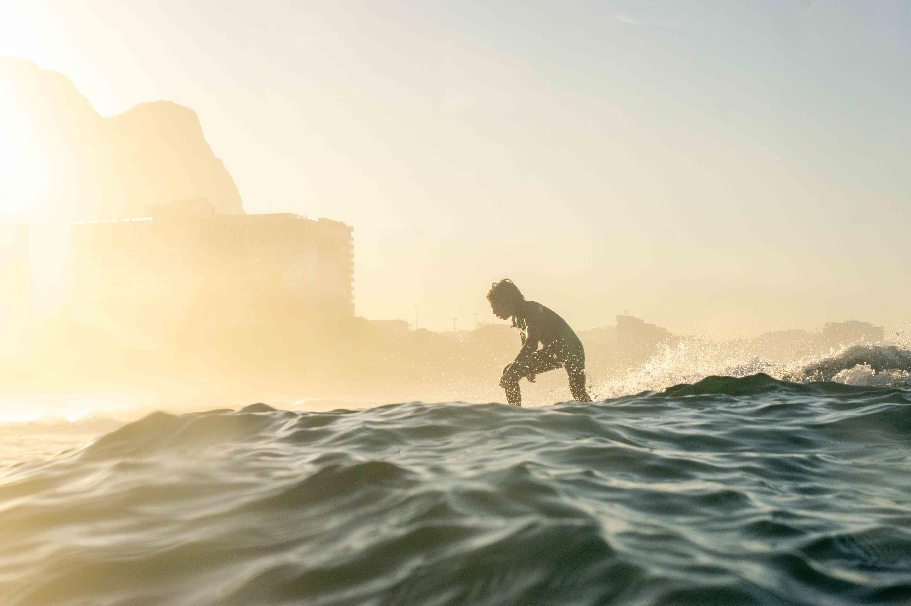
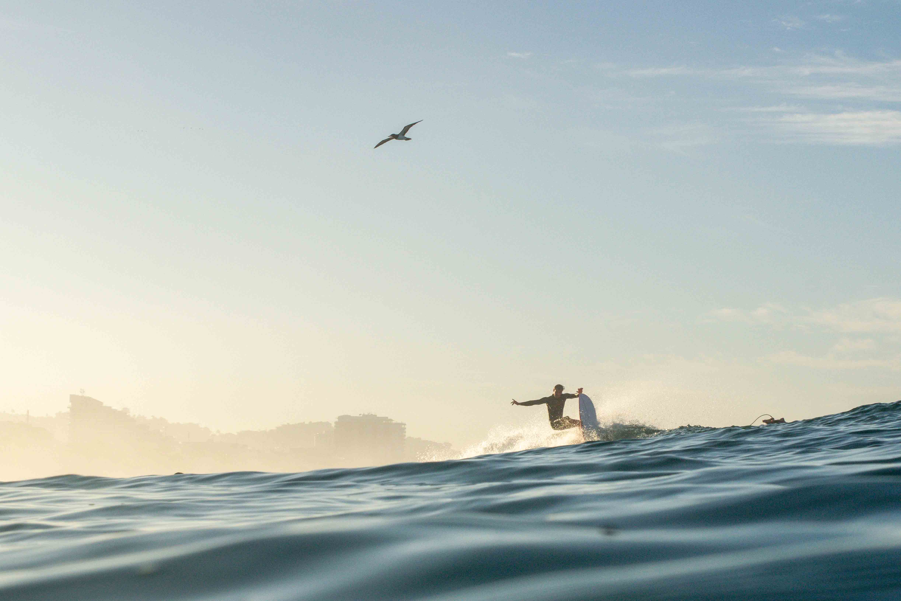
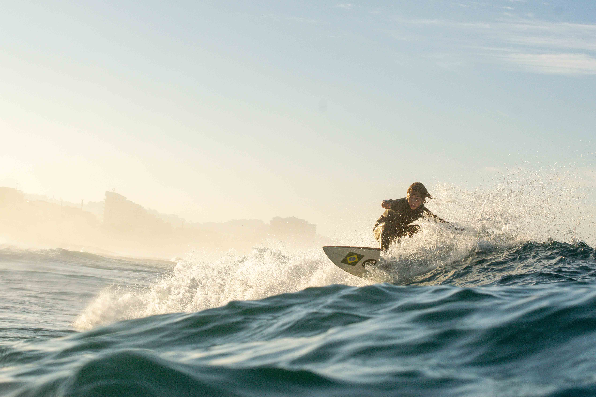

Mesma grade diagonal da opção A, com a cor de accent da marca
(#e8c87a, ~48% de opacidade). Destaca mais em céu/água escuros e amarra visualmente ao logo.
rgba(232, 200, 122, 0.48)
A — branco (referência)

A2 — dourado

